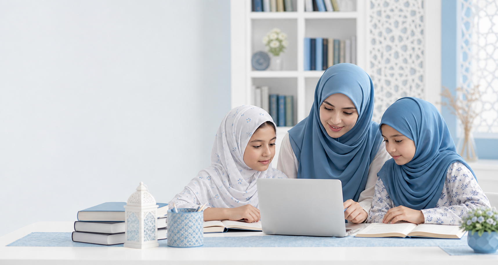
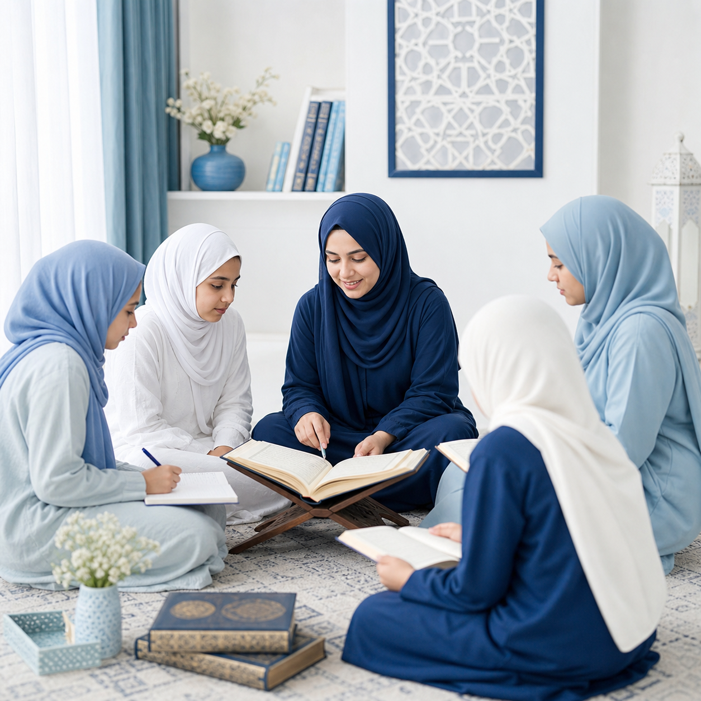

Structured Islamic learning for sisters and girls
﴿ وَمَا تَوْفِيقِي إِلَّا بِاللّٰهِ ﴾
“My success is only by Allah.”
Online Islamic Lessons
Special Online Programs for Sisters & Girls
We are pleased to welcome students from around the world to a structured and authentic Islamic learning environment designed especially for women, sisters, and young girls.
- Classes specially arranged for sisters
- One-to-one and group classes available
- International online access with flexible timing

Authentic online Islamic learning with clarity, modesty, and care.
A welcoming academy
Safe, respectful, and structured Islamic learning for every stage.
Who we serve
SIDRA is dedicated to women, sisters, and young girls who want to study Islam in a focused and authentic online setting.
How learning happens
Students benefit from daily structured lessons, easy-to-understand teaching, and the choice between one-to-one or group study.
Why it matters
Our goal is to help students grow in recitation, understanding, manners, and beneficial knowledge for family and future generations.
Core programs
Comprehensive online courses across Quran, Hadith, Fiqh, and Arabic.
📖 Quranic Studies
- Tajweed & Correct Pronunciation
- Quran Translation & Tafsir
- Hifz-ul-Quran (Memorization)
- Nazirah & Fluent Recitation
- Daily Quran Revision Programs
📜 Hadith & Islamic Sciences
- Mishkat al-Masabih
- Sahih al-Bukhari
- Selected Hadith Courses
- Seerah & Islamic Manners
⚖️ Fiqh & Islamic Education
- Mukhtasar al-Quduri
- Al-Hidayah
- Usul al-Fiqh
- Contemporary Islamic Issues
- Essential Islamic Knowledge for Women
📚 Arabic Language & Grammar
- Sarf & Nahw
- Balagha & Mantiq
- Arabic Conversation
- Arabic for Non-Native Speakers
Why join us?
A learning environment built with care for sisters and girls.
✔️ Classes specially arranged for sisters
✔️ Safe and respectful Islamic environment
✔️ Flexible timings according to your schedule
✔️ One-to-one & group classes available
✔️ Daily structured lessons
✔️ International online access
✔️ Learning in an easy and understandable way

May Allah ﷻ make this knowledge a source of نور, guidance, and barakah for all students and families.
Special focus for sisters
Helping students build knowledge, confidence, and beautiful character.
Strong Islamic understanding
Lessons are designed to strengthen core knowledge in a clear and beneficial way.
Confidence in Quran recitation
Students receive steady support in fluency, pronunciation, memorization, and revision.
Good manners and character
Study is paired with adab, sincerity, and values that benefit family and future generations.
Registration & WhatsApp Contact
Begin your learning journey with SIDRA.
Students from around the world are welcome to join. Contact us on WhatsApp for class details, timings, and registration.
WhatsApp: +93 765 20 92 40
Programs: Quran, Hadith, Fiqh, Arabic, and essential Islamic studies
Format: Online one-to-one and group classes for sisters and girls
Message on WhatsApp